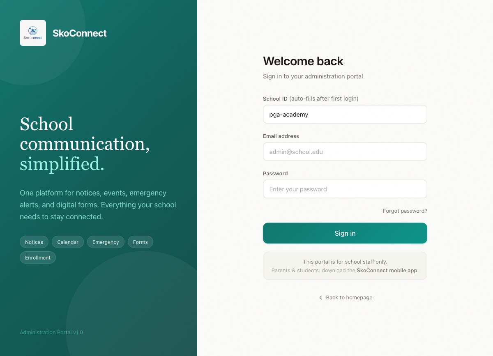
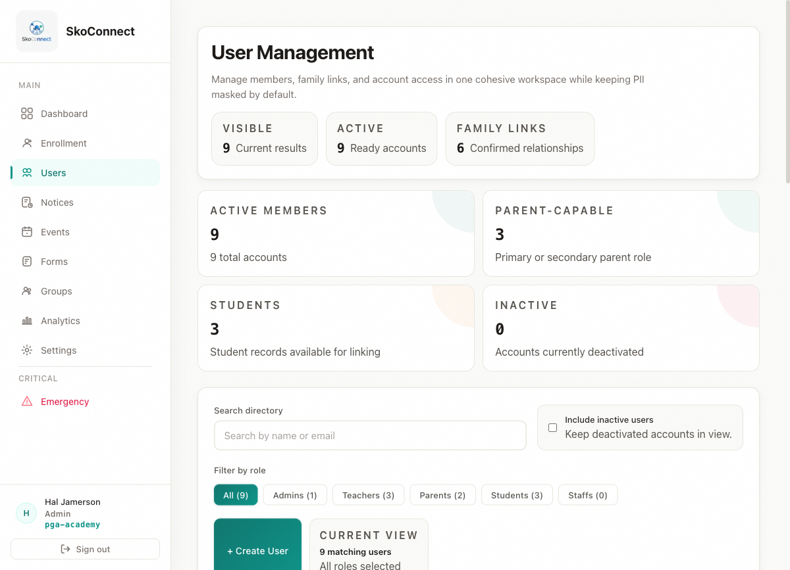

2026-04-05
SkoConnect Documentation v1.0 | Last updated: 2026-04-02
This guide walks you through setting up SkoConnect as a school administrator — from your first login to sending your first notice. The entire process takes about 15 minutes. By the end, you’ll have a fully functional school communication platform ready for your staff and families.
When your school was created in SkoConnect, an invitation email was sent to you. Here’s how to access your account:
After setting your password, you’ll be taken directly to the Setup Wizard — a five-step process to configure your school.
Tip: If you can’t find the invitation email, check your spam or junk folder. If it’s not there, contact your SkoConnect representative to request a new link.

The Setup Wizard appears automatically the first time you log in. It walks you through five steps:
Step 1 — School Details: Confirm your school’s name, then add your school’s address, phone number, and timezone.
Step 2 — Download Template: Download the CSV template that shows exactly how to format your student and staff list. This template has columns for email, role, first name, last name, phone, and parent email.
Step 3 — Upload CSV: Upload your completed CSV file with your students and staff. The system automatically creates accounts and links parents to their children.
Step 4 — Review Results: See a summary of how many users were created and whether any rows had errors. You can fix errors in your CSV and re-upload if needed.
Step 5 — Go to Dashboard: Click Go to Dashboard to finish setup. You’ll see your admin dashboard with an overview of your school.
Note: You can also skip the CSV upload during setup and do it later from the Enrollment page. This is fine — many schools prefer to get familiar with the platform first.
Notices are the primary way to communicate with families. Here’s how to send one:
Events appear on families’ calendars in the mobile app. Here’s how to add one:

After enrollment, you can see everyone who has an account at your school:

You’ve completed the basics. Here are additional features to explore:
| Problem | Solution |
|---|---|
| I can’t find the invitation email | Check your spam or junk folder. Contact your SkoConnect representative for a new invitation link. |
| Setup Wizard doesn’t appear after I log in | Clear your browser cache and cookies, then log in again. If the problem persists, contact support. |
| My CSV upload shows errors | Open your CSV in a spreadsheet app and verify the column headers
match exactly: email, role,
first_name, last_name. Optional columns:
phone, parent_email. Remove any extra spaces
from column headers. |
| I forgot my password | Go to the login page and click Forgot Password. Enter your email to receive a reset link. |
| I don’t see the sidebar navigation | Make sure you’re logged in as an administrator. Teachers, parents, and students see a different interface. |
| My school’s name is wrong | School names are set during initial setup. Contact your SkoConnect representative to request a change. |
Q: Can I add more administrators? A: Yes. Go to Users (or Enrollment) and create a new user with the “admin” role. You can have as many administrators as your school needs.
Q: How do I enroll students who join mid-year? A: Upload a new CSV with just the new students. The system automatically skips any duplicates (users who already have accounts). Their parents will be linked to existing accounts automatically.
Q: How do parents and students access SkoConnect? A: Families download the SkoConnect mobile app from the App Store (iPhone) or Google Play (Android) and log in with the credentials you assigned during enrollment.
Q: What if I accidentally send a notice to the wrong audience? A: You can edit or delete any notice after sending it. However, push notifications may have already been delivered. It’s always worth double-checking your audience selection before clicking Send.
Q: Can I schedule a notice to be sent later? A: Currently, notices are sent immediately when you click Send. For time-sensitive communications, consider preparing your notice ahead of time and sending it when you’re ready.
Q: How do I add teachers to my school? A: Include teachers in your enrollment CSV with the role set to “teacher,” or create them individually from the Users page. Each teacher will receive their own login credentials.